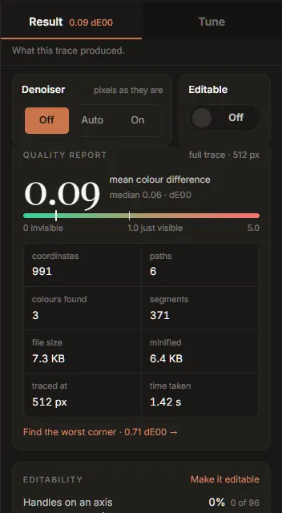

Result: reading the quality report
The Result half of the rail is what the last trace produced. It is a measurement, not a score: the SVG is rendered and compared with your image pixel by pixel, and the figures are what that comparison found.

From the top, the Result tab shows:
- The Denoiser and Editable settings (shared with Tune; see Tune).
- Auto chose, while it has something to offer (see Getting started).
- The quality report.
- Editability.
- What this trace could not recover.
- The palette (its own page).
- One line comparing Inkvec with another tracer on the project's published benchmark. It is labelled as such: it is not a measurement of your file.
While a trace runs, a list of the engine's stages appears at the top, each ticked with the time it took as it finishes.
The quality report
The large number is the mean colour difference between the SVG and the image, in dE00 (CIEDE2000), the standard measure of how different two colours look to a person. It is averaged over every pixel, so most of it comes from anti-aliased edges.
| dE00 | What it means |
|---|---|
| 0 | Identical. |
| about 0.1 | Typical for a clean PNG logo. |
| under 1.0 | Not visible side by side. |
| about 1.0 | Where a trained eye starts to see a difference. |
| well above 1 | Visible: a colour is off, or a detail is missing. |
The meter under it runs from 0 to 5 on a square-root scale, with a tick at 1.0, just visible. Beside the mean is the median, the difference at the typical pixel. A median much lower than the mean says the error is concentrated somewhere (often one small detail) rather than spread evenly.
The header says what was measured: full trace or draft, and the size it was traced at. The card fades while a new trace is running.
The figures below the meter:
| Figure | What it counts |
|---|---|
| coordinates | Numbers in the drawing's geometry. The best single measure of how heavy the file is to edit and to ship. |
| paths | Drawn elements: paths, circles, rectangles. |
| colours found | Distinct inks in the drawing. |
| segments | Lines, curves and arcs, across all paths. |
| file size | The SVG as written. |
| minified | What Minify would make it, or already if it is on. |
| traced at | The size the image was traced at, on its longer side. |
| time taken | How long the trace took. |
Find the worst corner zooms the viewer to 12× on the place where the SVG and the image disagree most, with the pixel grid on, and says how large that disagreement is.
The readout at the foot
Pinned under both halves of the rail are the three numbers that matter most, dE00, coordinates and file, each with what it changed by since the previous full trace. Fewer coordinates and a smaller file are shown as good news; a higher colour difference turns amber, since that is the cost. Drafts are never compared (they are smaller, so they would show changes nobody made); the readout compares full trace with full trace.
This is how to judge a control: move it, and read what it bought and what it cost here.
Under the readout are Export, Copy SVG and the comparison-card button (see Export), and Trace again, which runs a full trace with the controls as they are.
Editability
A trace is fitted for the pixels alone, so the file it makes does not have the habits of a file an artist drew by hand. This card counts three of those habits on your drawing:
| Row | What it counts | Hand-drawn files |
|---|---|---|
| Handles on an axis | Curve handles pointing exactly along x or y | 34% |
| Smooth joins | Places two curves meet without a kink | 89% |
| Nodes sharing a coordinate | Nodes with the same x or y as another node, so they can be aligned in one move | 86% |
Each bar shows your drawing's share, with the count, and a tick where hand-drawn files sit: the median of 1,544 SVGs drawn by artists, measured the same way. A plain trace starts near zero on the first two. Make it editable turns on Editable structure, which moves the bars towards the ticks. It costs a little colour accuracy (about 0.04 dE00 on icons); the quality report shows the price on your image.
A drawing made only of lines and arcs has no curve handles and no curve joins, so only the last row is shown, with a note saying why.
What this trace could not recover
This panel is always there. When it finds nothing it says Nothing we can detect was lost. When it finds something, each row says what, with Why for the measurement behind it and, sometimes, one link.
| Row | What it means | What you can do |
|---|---|---|
| The lettering came back as outlines, not editable text. | Six or more shapes of matching height sit on one baseline. Tracing recovers their shapes, not the typeface, so the words cannot be re-typed. | Set the text again in a vector editor if you need it live. |
| The source is a JPEG (or WebP), so these colours carry its compression damage. | The colours measured are the ones in the file, which are not quite the ones the artwork was drawn with. | Turn on the denoiser, and check the colours against your brand values (paste a brand palette). |
| Stroke widths are baked into filled outlines. | Several shapes are outlines drawn around lines rather than the lines themselves; an editor sees closed shapes, not strokes. | Try the Line art preset. |
| Line art was asked for, and the stroke widths vary too much to recover. | Strokes need one width per path; this drawing's widths change along the line. | Nothing: this drawing is not uniform-stroke line art. |
| Part of this image is a continuous ramp, which is something SVG cannot hold. | Part of the image is a smooth shade (a blur, a mesh, a photographic shadow) that no SVG gradient reproduces within a visible difference. | Nothing in the settings; it is the closest arrangement of fills. |
| N very small features did not survive the trace at this size. | Small islands of detail were painted over. | Raise Trace size, or lower Speckle floor (see Tune). |
The first row in this panel is also copied into the asset pack's README when you export one.